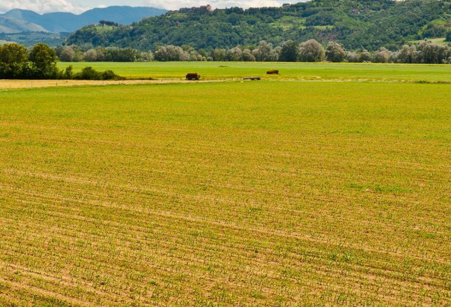

Umuhimu wa maeneo ya tambarare
Sehemu za tambarare huwa na udongo wenye rutuba unaofaa kwa kilimo na shughuli za ufugaji. Kielelezo namba 9 kinawasilisha kilimo katika eneo tambarare.

Sehemu za tambarare huwa na udongo wenye rutuba unaofaa kwa kilimo na shughuli za ufugaji. Kielelezo namba 9 kinawasilisha kilimo katika eneo tambarare.